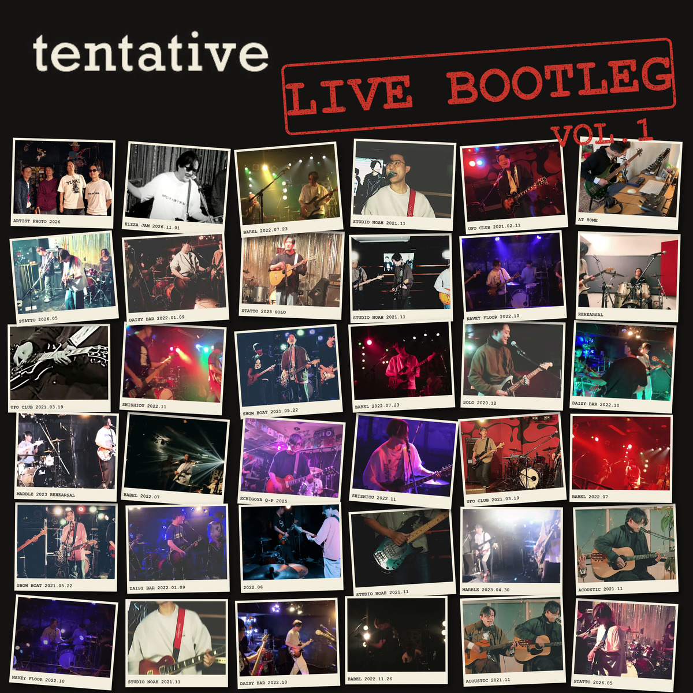
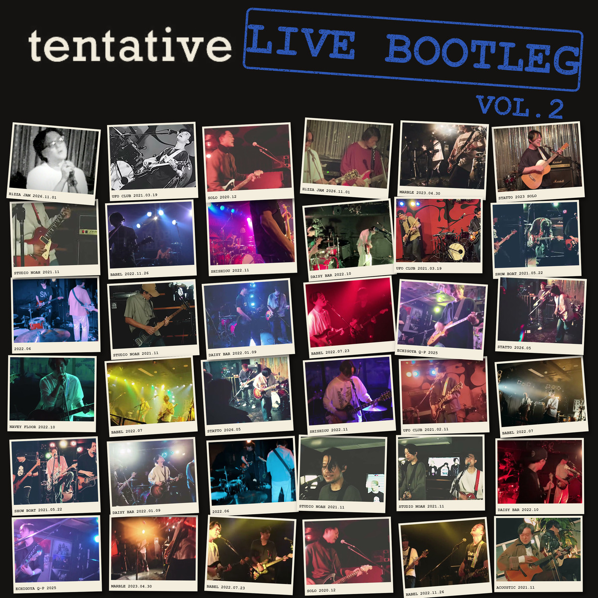

2020年から2026年までにライブで演奏した全曲を、いろいろな公演から1曲ずつ選んだ2枚組。時期はわざと混ぜて並べ、曲のあいだは当日の歓声でつないでいます。2枚とも、響きと歓声を少し足しています。


2020年12月から2026年11月までの、映像が残っている公演から1曲ずつ選んで並べた2枚組。全28トラック、VOL.1・VOL.2 とも14トラック、それぞれ約50分。
1本のライブを録ったものではない。会場も年もメンバーもばらばらで、曲ごとにどこで、いつ演奏したかを書いてある。名前は Aerosmith の『Live! Bootleg』（1978年）から取った。いろいろな公演を集めて1枚にする、という作り方も同じ。
音の出どころは、これまでYouTubeに上げてきたライブ映像。スマホやビデオカメラで撮ったものが中心で、立川BABELと赤坂Navey Floorの2公演だけ、卓からのライン録音が混ざっている。今回はこの2公演の音を基準にして、ほかの公演の音色と音量を寄せた。ただし揃えきってはいない。会場ごとの音の違いは残してある。
同じ曲を何度も演奏している場合は、いちばんいい演奏を1つだけ選んだ。曲と曲のあいだは、実際の公演の拍手でつないでいる。
tentative は2018年結成。メンバーチェンジを経て、これまでに関わったメンバーは通算7人。この2枚には、その7人全員の演奏が入っている。
収録したのは、オリジナル曲が19曲、及川ユウダイの曲が3曲、カバーが5曲、それにSEとギターソロ。スタジオで演奏した1曲を除いて、すべてライブ録音。
01. Intro (SE)高円寺 Show Boat／2021年5月22日バンド編成での最初のライブで、開演に流したSE。EP『Toxic Innocence』（2021年）の1曲目のインスト。この盤ではVOL.2の最後にも同じ日のSEが入っていて、2枚の頭と終わりになっている。
02. Sports Car立川 BABEL／2022年7月23日この日は最後に演奏した曲。サビのメロディは、最初は日本語の歌詞で浮かんだ。
03. It's the Hollow of Last Winter Days立川 BABEL／2022年7月23日YouTubeには「Catch The Air」の名前で上げていた版。「Last Winter Days」の名前で演奏した公演もある。
04. Big Bad Dragonfly立川 BABEL／2022年7月23日インスト曲。
05. Wonder FuelHiZZA JAM #1／2026年11月1日作曲：及川ユウダイ。この盤でいちばん新しい公演から。
06. Guitar Solo ~ Dead Shrine高円寺 UFO Club／2021年2月11日（ソロ）ギターソロから、止めずにそのまま Dead Shrine に入っている。
07. Southern Birds立川 BABEL／2022年7月23日2020年12月から2023年4月までのあいだに、映像が残っているだけで5公演で演奏している。
08. Revolution（The Beatles）武蔵境 STATTO／2023年 ソロライブ1回目ギター弾き語りでのカバー。
09. 名前のない街武蔵境 STATTO／2026年5月作曲：及川ユウダイ。
10. Stand By Me（John Lennon）~ Caramel River東高円寺 UFO Club／2020年12月15日（ソロ）この盤でいちばん古い公演。Stand By Me は John Lennon のカバー版（1975年）をもとにしている。曲間を空けずに Caramel River へ入るので、1トラックにした。
11. Weekend高円寺 Show Boat／2021年5月22日この日は Weekend を2回演奏した。ここに入れたのは、当時のギタリストがボーカルとアコースティックギターを担当した版。
12. Strawberry高円寺 UFO Club／2021年2月11日（ソロ）未発表曲。演奏が残っているのはこの日の1回だけ。
13. Loser（Beck）東高円寺 UFO Club／2020年12月15日（ソロ）この日の最後の曲。
14. Fire赤坂 Navey Floor／2022年10月この日の最後の曲。
01. ShiftHiZZA JAM #1／2026年11月1日
02. A Little Bit Of The Moon立川 BABEL／2022年7月23日2020年12月のソロから2022年7月まで、5公演で演奏している。
03. 閃光鶴間 えちごやきゅーぴー／2025年作曲：及川ユウダイ。
04. Would?（Alice in Chains）武蔵境 STATTO／2023年 ソロライブ2回目ギター弾き語りでのカバー。
05. Nice高円寺 UFO Club／2021年2月11日（ソロ）
06. Toxic Innocence赤坂 Navey Floor／2022年10月EP『Toxic Innocence』の表題曲。映像が残っている公演のうち6公演で演奏していて、この盤の曲の中でいちばん多い。
07. Old and RottenHiZZA JAM #1／2026年11月1日
08. Sit Back in the Rockin' ChairFrom the Basement／2020年3月13日この盤で唯一のスタジオ演奏。ライブで演奏した映像が残っていないので、スタジオで演奏した映像から取った。
09. Sarah, You Should Walk Slowly巣鴨 獅子王／2022年11月
10. Jeremy（Pearl Jam）武蔵境 STATTO／2023年 ソロライブ3回目ギター弾き語りでのカバー。
11. Monkey DaughterHiZZA JAM #1／2026年11月1日演奏の途中でギターの弦が切れている。
12. My Little Princess立川 BABEL／2022年7月23日
13. My Black WidowHiZZA JAM #1／2026年11月1日この日の最後の曲。
14. Outro (SE)高円寺 Show Boat／2021年5月22日VOL.1の1曲目と同じ日の、終わりに流したSE。
| 年 | 会場 | 曲数 |
|---|---|---|
| 2020年3月13日 | From the Basement（スタジオ） | 1 |
| 2020年12月15日 | 東高円寺 UFO Club（ソロ） | 2 |
| 2021年2月11日 | 高円寺 UFO Club（ソロ） | 3 |
| 2021年5月22日 | 高円寺 Show Boat | 3（SE 2つを含む） |
| 2022年7月23日 | 立川 BABEL | 6 |
| 2022年10月 | 赤坂 Navey Floor | 2 |
| 2022年11月 | 巣鴨 獅子王 | 1 |
| 2023年 | 武蔵境 STATTO（ソロライブ3回） | 3 |
| 2025年 | 鶴間 えちごやきゅーぴー | 1 |
| 2026年5月 | 武蔵境 STATTO | 1 |
| 2026年11月1日 | HiZZA JAM #1 | 5 |
作詞・作曲：tentative（Wonder Fuel／名前のない街／閃光 は及川ユウダイ。カバーは原曲の作者）